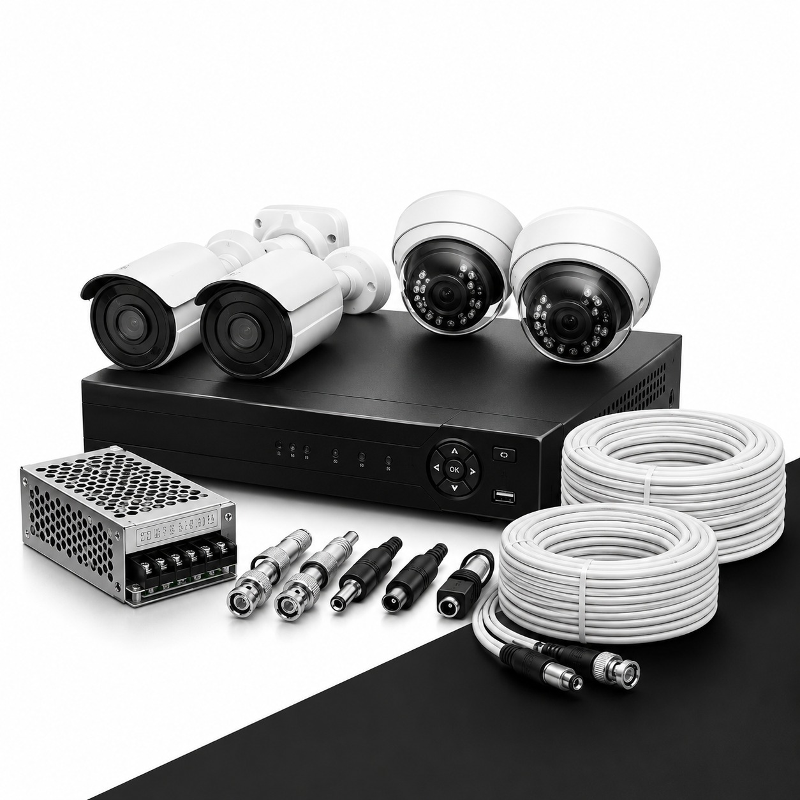

<div class="modal-content">
    <div class="modal-header d-flex justify-content-between align-items-center">
        <h4 class="modal-title mb-0">{{productData?.title}}</h4>
        <button type="button" class="btn-close" aria-label="Close" (click)="activeModal.close()"></button>
    </div>

    <div class="modal-body">
        <div class="row">
            <div class="col-md-5">
                <div class="product-img">
                    
                </div>
            </div>
            <div class="col-md-7">
                <!-- Description Section -->
                <div class="mb-4">
                    <h6 class="mb-2 d-flex align-items-center f-w-700">
                        <span>
                            <i class="fa-solid fa-list me-2"></i>
                        </span> Description
                    </h6>
                    <p>
                        {{productData?.description}}
                    </p>
                </div>

                <!-- Key Features Section -->
                <div class="mb-4">
                    <h6 class="mb-2 d-flex align-items-center f-w-700">
                        <span>
                            <i class="fa-solid fa-star me-2"></i>
                        </span>
                        Key Features
                    </h6>
                    <ul class="list-unstyled">
                        <li class="mb-2">• Manufactured under <b>ISO-certified processes</b></li>
                        <li class="mb-2">• Boron steel construction (27MnCrB5)</li>
                        <li class="mb-2">• <b>Precision forging</b> for dimensional accuracy and strength</li>
                        <li class="mb-2">• <b>Chemical, hardening & tempering</b> for optimal hardness and
                            toughness</li>
                        <li class="mb-2">• Excellent resistance to <b>wear, abrasion, and impact</b></li>
                        <li class="mb-2">• Balanced blade design for <b>smooth operation and reduced
                                vibration</b>
                        </li>
                        <li class="mb-2">• Ensures <b>lower power consumption and longer service life</b></li>
                    </ul>
                </div>

                <!-- available range -->
                <div class="mb-4">
                    <h6 class="mb-2 d-flex align-items-center">
                        <span>
                            <i class="fa-brands fa-stack-exchange me-2"></i>
                        </span>
                        Available Range
                    </h6>
                    <div class="table-responsive specs-container">
                        <table class="table table-condensed m-0">
                            <tbody>
                                <tr>
                                    <td>C Type</td>
                                    <td>14.5 * 57 | 14.5 * 46 | 12.5 * 57</td>
                                </tr>
                                <tr>
                                    <td>L Type</td>
                                    <td>14.5 * 57 | 14.5 * 46 | 12.5 * 57</td>
                                </tr>
                            </tbody>
                        </table>
                    </div>
                </div>

                <!-- Applications Section -->
                <div class="">
                    <h6 class="mb-2 d-flex align-items-center">
                        <span>
                            <i class="fa-solid fa-book me-2"></i>
                        </span>
                        Applications
                    </h6>
                    <ul class="list-unstyled">
                        <li class="mb-2">• Used in <b>Rotavators / Rotary Tillers</b></li>
                        <li class="mb-2">• Suitable for <b>primary and secondary tillage</b></li>
                        <li class="mb-2">• Effective in dry, wet, and hard soil conditions</li>
                        <li class="mb-2">• Compatible with <b>leading global OEM rotavator brands</b></li>
                        <li class="mb-2">• Ideal for agricultural, horticultural, and commercial farming
                            operations
                        </li>
                    </ul>
                </div>
            </div>
        </div>

    </div>
    <div class="modal-footer">
        <button class="p-btn" (click)="redirectToWhatsApp(productData)">Inquiry</button>
    </div>


</div>